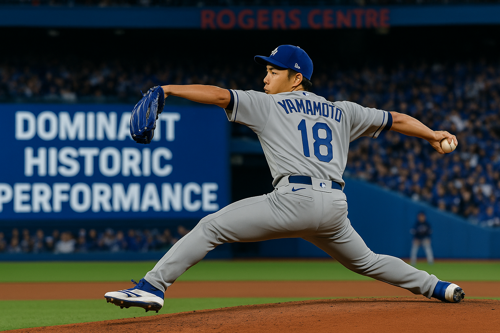
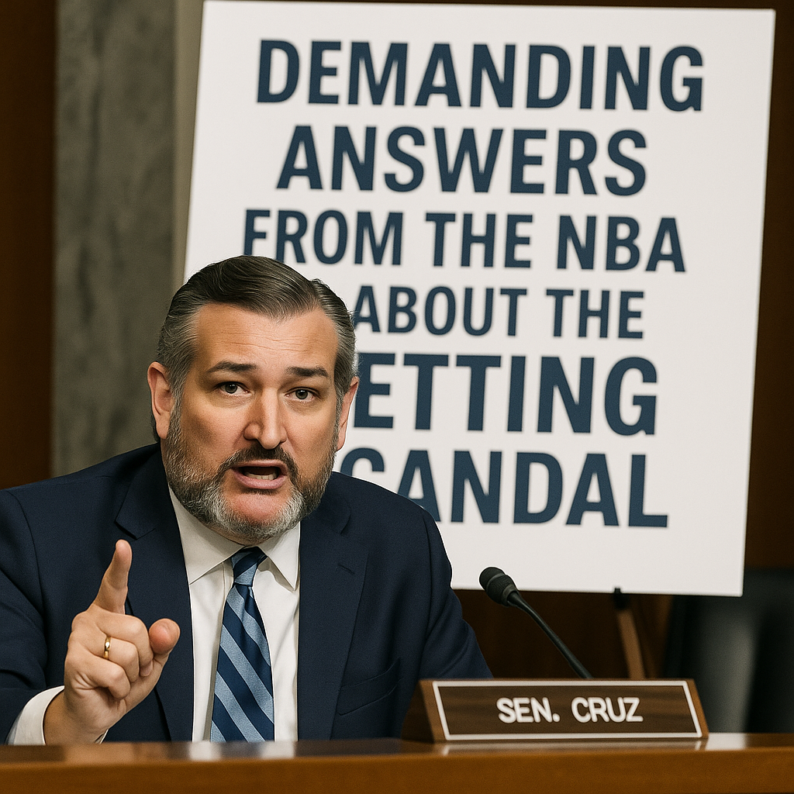
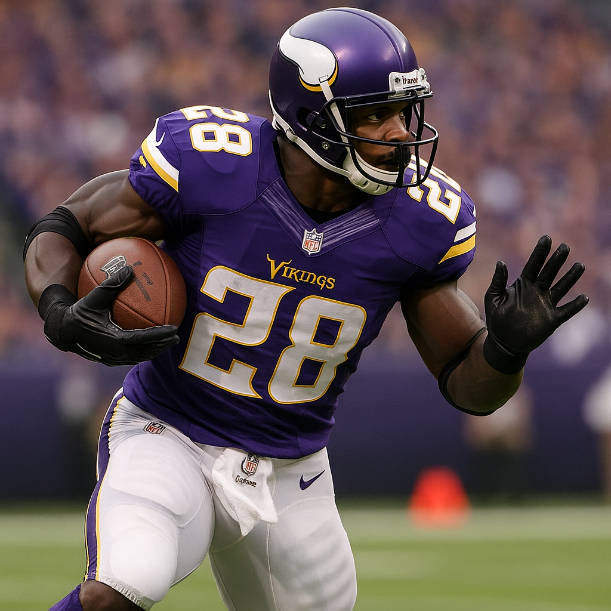

Latest News Headlines
in the Sports and Betting World
YouTube Implements Strict Global Restrictions on Online Betting Content
Posted: November 18, 2025, 12:00 PM PT
YouTube just changed the game for anyone creating betting and gambling content. Starting November 17, 2025, the platform rolled out sweeping new rules that significantly tighten how creators can cover online betting, gambling services, and even social casino games. These updates affect everyone from affiliate marketers promoting sportsbooks to streamers showing off skin betting sites, and the consequences could reshape how betting content gets distributed across one of the world's largest video platforms.
The changes are comprehensive and leave very little wiggle room. Any mention or demonstration of real money gambling services now falls under restricted content unless the service is certified by Google LLC. That means if you're a content creator showing people how to use a sportsbook, casino app, or daily fantasy site, you need to make sure that platform has Google's official stamp of approval. No certification? Your video could get flagged, demonetized, or removed entirely.
But it doesn't stop at traditional gambling. YouTube is also cracking down on games of chance tied to items with monetary value. We're talking about skins betting in games like CS:GO, NFT based gambling platforms, and any virtual goods wagering where cosmetic items or digital assets can be converted into real money. This is a direct response to the massive growth of crypto casinos, skin gambling sites, and other gray market betting products that have exploded in popularity over the last few years.
Even social casino games are getting hit with restrictions. These are the apps and websites where players use virtual chips instead of real money, often marketed as free to play entertainment. Under YouTube's new policy, any content featuring these games will be age restricted, meaning viewers under 18 won't be able to access the videos at all. The platform is clearly trying to limit youth exposure to gambling adjacent content, even when no actual money is changing hands.
For existing content that violates the new rules, YouTube is giving creators a transition period before enforcement ramps up. Videos won't immediately trigger strikes on your channel, but non compliant content may be removed or reclassified over time. That gives creators a short window to either edit their old videos, remove gambling references, or accept that their content might disappear from the platform. It's a softer rollout than an immediate purge, but the writing is on the wall.
YouTube says the policy expansion is a response to rising concerns about gambling exposure among younger viewers. The data backs that up. Studies have shown that kids and teenagers are consuming gambling related content at alarming rates, whether it's watching streamers open loot boxes, influencers promoting crypto betting sites, or YouTubers doing casino streams. The platform is under enormous pressure from regulators, parent groups, and governments around the world to do something about it.
The other driver here is the explosion of betting products tied to digital goods. Skin betting became a multi billion dollar industry without most people even realizing it existed. Players would wager CS:GO weapon skins on casino style games, then cash out those skins for real money on third party marketplaces. The same thing happened with NFTs, where people gambled digital collectibles in games with monetary value attached. YouTube is trying to close those loopholes before they spiral completely out of control.
So what does this mean for the betting world? For starters, it's going to reshape how betting content gets promoted and monetized. Creators who built entire channels around sportsbook reviews, casino streams, or gambling tutorials are going to have to adapt fast. If their content features uncertified platforms or violates the new rules, they risk losing their entire audience and revenue stream overnight.
Affiliate marketers are especially vulnerable. A huge portion of sports betting and casino marketing happens through YouTube influencers who promote betting apps in exchange for referral commissions. If those apps aren't Google certified, those videos are now restricted content. That could gut an entire segment of the affiliate industry and force operators to rethink how they acquire customers through digital media.
For operators and sportsbooks, this policy matters because it directly impacts brand exposure and customer acquisition. YouTube is one of the primary platforms where younger bettors discover new apps, learn how betting works, and get influenced by content creators they trust. If that content gets restricted or removed, it cuts off a major pipeline for new users. Operators might need to shift budgets toward other channels like TikTok, Instagram, or traditional advertising, which could get expensive fast.
For bettors and fans of gambling content, the changes signal a shift toward greater oversight of what you can watch and where you can watch it. YouTube is essentially saying that gambling adjacent media needs to be regulated more tightly, even if it's just entertainment. That might mean fewer tutorials, fewer reviews, and fewer creators willing to risk their channels by covering betting topics.
From BetLegend's perspective, this update is relevant because it affects how betting brands and content get viewed or referenced by third party creators. If you run a sportsbook, casino, or betting media company, you need to think about how this policy impacts your communication strategy globally. Do your partners and affiliates understand the new rules? Are you working with creators who could get demonetized or removed? How does this change your customer acquisition playbook?
The social gaming and betting ecosystem is going to have to adjust fast. Creators will either comply, pivot to other platforms, or risk getting shut down. Operators will need to figure out which content channels are still viable and which ones are dead ends. And regulators in individual markets are going to be watching closely to see if YouTube's global policy becomes a template for other platforms.
There are a few key things to watch as this unfolds. First, how aggressively does Google enforce the new policy? Will we see major takedowns of large betting channels, or will enforcement be more selective? Second, will affiliate marketing and influencer promotions tied to betting services face mass removals or just minor demonetization? Third, are other platforms like Twitch, TikTok, and Instagram going to follow YouTube's lead and implement similar restrictions?
Individual markets are also going to react differently. In the United States, where sports betting is legal in most states but still heavily regulated, YouTube's policy could provide cover for lawmakers looking to impose stricter rules on betting advertising. In Europe, where gambling regulation is already tight, this might accelerate existing trends toward limiting exposure. In Latin America and Asia, where gambling laws are all over the map, YouTube's global policy could create friction with local operators who don't meet Google's certification standards.
The impact on skins betting, esports wagering, and virtual goods gambling is going to be massive. These were areas that lived in regulatory gray zones for years, thriving partly because platforms like YouTube allowed creators to promote them without much pushback. Now that YouTube is explicitly restricting content tied to items with monetary value, a lot of those businesses are going to lose their primary marketing channel. Expect some of them to move underground or shift to less regulated platforms.
Content formats are going to change too. Tutorials on how to bet, reviews of betting apps, casino stream highlights, and gambling strategy videos might all need to be rethought or sanitized to comply with the new rules. Creators who want to stay monetized and avoid strikes will probably tone down references to specific platforms, avoid showing real money transactions, and focus more on educational or entertainment angles that don't trigger YouTube's filters.
The bigger question is whether this policy actually works. YouTube has tried before to crack down on gambling content, and creators always found workarounds. Some moved to unlisted videos shared through Discord. Others used coded language to avoid detection. A few just stopped caring and accepted the demonetization. The real test will be whether Google can enforce these rules consistently without creating a cat and mouse game that undermines the whole effort.
What's clear is that YouTube is taking this seriously. The platform has faced enormous scrutiny over the last few years for allowing gambling content to proliferate, especially content targeted at younger audiences. Regulators in multiple countries have threatened fines, investigations, and even bans if platforms don't do more to protect minors. YouTube is getting ahead of that pressure by implementing global restrictions that go further than what most governments have required.
For anyone in the betting industry, the message is simple. The days of unrestricted gambling content on YouTube are over. If you're a creator, operator, or affiliate, you need to understand the new rules, make sure your content complies, and have a backup plan if enforcement gets aggressive. Because if there's one thing we've learned from watching platforms crack down on controversial content, it's that once they start restricting, they don't stop halfway.
This isn't just about YouTube protecting itself legally. It's about the entire betting and gambling content ecosystem adjusting to a new reality where platforms are held accountable for what gets promoted on their sites. The era of the Wild West betting content might be coming to an end, and everyone involved needs to figure out how to adapt before they get left behind.
Congress Intensifies Push for Federal Sports Betting Reforms Following NBA Gambling Scandal
Posted: November 12, 2025, 3:30 PM
The recent FBI arrests of NBA players and staff tied to illegal gambling have triggered a renewed wave of federal pressure on sports betting regulation, with lawmakers across both chambers of Congress now demanding sweeping reforms to protect the integrity of professional and collegiate sports. What began as a criminal investigation into match-fixing and illegal wagering has evolved into a broader conversation about the future of legal sports betting in America, and the fallout is putting the entire industry under the microscope.
The House Committee on Energy and Commerce has formally requested a full briefing from NBA Commissioner Adam Silver, seeking detailed answers about the league's current code of conduct, the effectiveness of internal monitoring systems, and whether the NBA is reconsidering its lucrative partnerships with betting companies in light of the scandal. This isn't a courtesy call. Congress wants accountability, and they want it on the record. The committee's inquiry is focused on understanding how players and staff were able to engage in prohibited gambling activities despite the league's existing rules and oversight mechanisms.
Senate Commerce Committee Chairman Ted Cruz and Ranking Member Maria Cantwell have gone even further, demanding that the NBA provide internal investigation documents going back to 2020. The senators want a full accounting of every gambling-related incident the league has investigated over the last five years, including cases that never became public. This is an unprecedented level of congressional scrutiny, and it signals that federal lawmakers are no longer satisfied with self-regulation by professional sports leagues. The message is clear: if the leagues can't police themselves, Congress will step in and do it for them.
The push for a nationwide ban on collegiate player prop bets has become the rallying cry for reformers. NCAA President Charlie Baker has publicly called for Congress to prohibit all betting markets tied to individual college athlete performance, arguing that these prop bets create direct incentives for corruption and put student athletes at risk of harassment and coercion. The NCAA has been fighting this battle for years, but the NBA scandal has given their arguments new urgency. Lawmakers from both parties are now seriously considering legislation that would make it illegal for any legal sportsbook to offer prop bets on college players, regardless of what state the book operates in.
The broader reform agenda goes well beyond college props. Senator Dick Durbin continues to champion the SAFE Bet Act, a comprehensive bill that would establish federal standards for sports betting advertising, require affordability checks to prevent problem gambling, and impose strict restrictions on prop bets across all sports. The SAFE Bet Act has been languishing in committee for months, but the NBA arrests have breathed new life into it. Durbin's office believes they now have the political momentum to push the bill forward, and industry insiders are taking the threat seriously.
Enhanced advertising standards are a central component of the reform push. Lawmakers are particularly focused on limiting the volume and placement of betting ads during live sports broadcasts, especially those watched by minors. The concern is that constant exposure to gambling promotions normalizes betting for young audiences and creates future problem gamblers. Some proposals would restrict betting ads to specific time slots, require explicit warnings about addiction risks, and ban celebrity endorsements that might appeal to underage viewers. The advertising industry is already preparing to fight these restrictions, but public sentiment has shifted dramatically in favor of tighter controls.
Affordability checks represent another battleground. Under Durbin's proposal, sportsbooks would be required to verify that bettors have the financial means to sustain their wagering activity, similar to regulations in the United Kingdom. This would likely involve credit checks, income verification, and mandatory deposit limits for customers who fail affordability tests. The betting industry argues that such requirements would drive customers to illegal offshore books, but proponents counter that protecting vulnerable bettors from financial ruin is worth the potential loss of market share. It's a fundamental philosophical divide about whether sports betting should be treated as entertainment or as a product that requires significant consumer protection safeguards.
Offshore operators have become a particular focus of enforcement efforts. While legal sportsbooks operating in regulated states face strict oversight, offshore books continue to serve American customers with virtually no accountability. These operators don't pay taxes, don't contribute to problem gambling programs, and don't share data with sports integrity monitors. The new reform proposals include provisions for increased federal enforcement against offshore sites, including potential criminal penalties for executives and payment processors that facilitate illegal betting. The Justice Department has been asked to provide Congress with a detailed plan for shutting down the largest offshore operators, and initial discussions have centered on blocking financial transactions and seizing domain names.
The call for stronger federal involvement in sports integrity marks a significant shift from the current state-by-state regulatory framework. Right now, each state that has legalized sports betting sets its own rules and monitors its own operators. This patchwork system has created inconsistencies in how integrity issues are handled, with some states taking a far more aggressive approach than others. Reformers argue that sports integrity is a national issue that requires federal coordination, particularly given that professional leagues operate across state lines and integrity threats can originate anywhere. The proposal would create a federal sports betting oversight office within the Department of Justice, tasked with coordinating integrity monitoring across all legal jurisdictions and working directly with leagues to identify suspicious activity.
The Senate Judiciary Committee's December 2024 hearing on sports betting was supposed to be a comprehensive examination of these issues, but it quickly devolved into a partisan argument about unrelated matters and produced no actionable outcomes. No follow-up hearings have been scheduled since, and reformers are frustrated that Congress allowed the momentum to dissipate. The NBA arrests have forced the issue back onto the legislative agenda, but there's skepticism about whether lawmakers will actually follow through with meaningful legislation or simply use the scandal for political posturing.
Industry groups are preparing for a prolonged fight. The American Gaming Association, which represents legal sportsbooks, has already begun lobbying against what it views as overly restrictive proposals. Their argument is that excessive regulation will push bettors back to the black market, undermining the entire purpose of legalization. They're particularly opposed to federal affordability checks and advertising bans, which they claim would make it impossible to operate profitably in the American market. The AGA is pushing a counter-narrative that emphasizes responsible innovation and industry-led integrity programs, hoping to convince Congress that self-regulation can work if given more time and resources.
Professional leagues are caught in a difficult position. On one hand, they've embraced sports betting as a lucrative revenue stream through partnerships, sponsorships, and data-sharing agreements. On the other hand, they need to demonstrate to Congress that they're taking integrity seriously and are willing to support reasonable reforms. The NBA in particular is facing intense scrutiny over how its partnership with betting operators might have created conflicts of interest or clouded judgment about enforcement. Commissioner Silver will need to walk a fine line in his testimony before Congress, defending the league's integrity efforts while acknowledging that improvements are necessary.
The timeline for legislative action remains uncertain. While the NBA scandal has created political pressure for reform, passing comprehensive federal legislation is always a slow and complicated process. Different factions within Congress have competing visions for what sports betting regulation should look like, and finding consensus will require significant negotiation and compromise. Some lawmakers want a full federal takeover of sports betting regulation, while others prefer to preserve state authority while establishing minimum federal standards. These fundamental disagreements about the proper role of federal government in gambling regulation will need to be resolved before any bill can advance.
What's clear is that the status quo is no longer acceptable to federal lawmakers. The combination of the NBA gambling scandal, rising concerns about problem gambling rates, and persistent integrity threats has created a political environment where doing nothing is no longer an option. Whether Congress ultimately passes the SAFE Bet Act, a watered-down compromise bill, or a series of targeted reforms remains to be seen. But one thing is certain: the sports betting industry is about to face the most serious regulatory challenge since legalization began, and the outcome will shape the future of legal wagering in America for years to come.
For bettors, operators, and sports leagues alike, the message from Washington is unmistakable. The era of rapid expansion with minimal federal oversight is ending. A new phase is beginning, one where integrity, consumer protection, and regulatory accountability take center stage. How the industry responds to this pressure, and how Congress balances the competing interests at play, will determine whether legal sports betting can fulfill its promise or whether it becomes just another cautionary tale of an industry that grew too fast without adequate safeguards. The stakes have never been higher, and everyone involved knows it.
Dodgers Win 2025 World Series in One of the Greatest Fall Classics Ever Played
Posted: November 1, 2025 – 11:36 PM

They did it. The Los Angeles Dodgers are World Series champions once again, and if you watched this series from start to finish, you know it wasn't handed to them. This was a fight. This was a war. And when the final out was recorded just after 11 PM Pacific time, it felt like the culmination of something truly special.
The Blue Jays gave everything they had. They played with heart, with grit, with the kind of resilience that makes October baseball what it is. This wasn't a mismatch. This was a heavyweight bout that went the distance, and Toronto has nothing to hang their heads about. They pushed the Dodgers to the absolute limit.
But this night belonged to Yoshinobu Yamamoto. The World Series MVP was absolutely sensational throughout the series, and his performance will be talked about for generations. The man was lights out. Electric. Unhittable at times. He carried the Dodgers' pitching staff on his back and delivered when it mattered most.
And then there was *that* moment. The one that'll become legend. Yamamoto closing out the series on zero days rest. Zero. Not one. Not two. Zero. You don't see that anymore. You rarely see it ever. But there he was, walking to the mound in the biggest moment of his life, and he delivered. Ice in his veins. That's the kind of stuff that becomes folklore.
This was one of the greatest World Series we've ever seen. A true classic. The kind of series that reminds you why you fell in love with baseball in the first place. Every pitch mattered. Every at-bat felt huge. Every inning was a battle. Both teams left it all on the field, and we were lucky enough to witness it.
For the Dodgers, this is redemption. This is validation. This is what all the talent, all the payroll, all the pressure was building toward. They got it done when it counted. For the Blue Jays, this hurts, but they played their hearts out and earned the respect of everyone who watched. This was baseball at its absolute finest.
Congratulations to the 2025 World Series Champions, the Los Angeles Dodgers. And congratulations to all of us who got to watch a Fall Classic that will be remembered forever.
Yoshinobu Yamamoto to Start Elimination Game 6 as Dodgers Face World Series Brink
7:30 PM, October 30, 2025
The Los Angeles Dodgers are down to their final strike. After a crushing 6-1 loss in Game 5 that featured the Blue Jays making World Series history with back-to-back first-pitch home runs, the defending champions now face elimination on Friday night in Toronto.
But if there's one pitcher you'd want on the mound with your season on the line, it might just be Yoshinobu Yamamoto.
Yamamoto's Postseason Dominance
The 27-year-old Japanese ace has been nothing short of spectacular this October. Coming off back-to-back complete games—including a masterful 9-inning gem in Game 2 that evened the series at Rogers Centre—Yamamoto has shown the kind of ice-cold composure that defines postseason legends.
In Game 2, Yamamoto became the first pitcher to throw a World Series complete game since Johnny Cueto in 2015. He followed that up with another complete game performance, marking the first time a pitcher has thrown consecutive postseason complete games since Curt Schilling in 2001. That's rarified air.
Manager Dave Roberts didn't mince words: "He could have gone another 30, 40 pitches tonight. That's how dominant he was." Yamamoto's regular season numbers (12-8, 2.49 ERA, 0.99 WHIP, 201 strikeouts) already marked him as an ace, but his postseason work has elevated him to a different tier entirely.
The Ultimate Test
What makes Friday's start even more remarkable is that Yamamoto actually volunteered to pitch in relief during the marathon 18-inning Game 3. That kind of competitive fire—the willingness to sacrifice rest and routine for the sake of winning—is exactly what the Dodgers need right now.
The Blue Jays lead the series 3-2 and are one win away from their first World Series title since 1993. They've outscored the Dodgers 13-3 over the last two games, with Vladimir Guerrero Jr. and Davis Schneider making history by launching back-to-back home runs on the first two pitches of Game 5—a feat that had never been done in 121 years of World Series play.
Dodgers' Backs Against the Wall
Los Angeles is facing elimination for the first time since the 2024 NLDS—a series they rallied from to eventually win the 2024 championship. History suggests they know how to respond under pressure. But their offense has gone ice cold at the worst possible time, managing just three runs across 18 innings in Games 4 and 5 combined.
That's where Yamamoto becomes even more critical. If he can replicate his Game 2 brilliance and shut down Toronto's suddenly red-hot lineup, the Dodgers offense only needs to scratch across 2-3 runs to force a winner-take-all Game 7 on Saturday.
The Betting Angle
Game 6 is scheduled for 5:00 PM PT on Friday at Rogers Centre. Yamamoto's presence on the mound has pushed the Dodgers from longshot territory back into live-dog range. His track record in pressure spots—combined with LA's experience winning elimination games—makes this a genuine toss-up despite the series deficit.
The question isn't whether Yamamoto will be ready. It's whether the Dodgers' lineup can finally break through against Toronto's pitching and give their ace the run support he deserves. Because if there's one thing we've learned this October, it's that when Yoshinobu Yamamoto takes the mound, anything is possible.
Game 6: Friday, October 31st, 5:00 PM PT, Rogers Centre
49ers Trade for Patriots Edge Rusher Keion White in Desperate Pass Rush Gamble
11:42 PM, October 29, 2025

The San Francisco 49ers made a move they couldn't afford not to make. With their pass rush sitting dead last in the league and injuries piling up like a bad beat at the sportsbook, the Niners acquired defensive end Keion White from the New England Patriots in exchange for a 2026 sixth-round pick. In return, San Francisco also received a conditional 2026 seventh-rounder.
It's not a blockbuster. It's not flashy. But for a team that managed just five sacks over their last six games and got embarrassed by Houston in Week 8, it's a necessary gamble on a young player with untapped upside.
Who Is Keion White?
White was a second-round pick by the Patriots in 2023, selected 46th overall out of Georgia Tech. Before that, he played at Old Dominion—where he actually started his college career as a tight end before transitioning to defensive end. That unconventional path speaks to his raw athleticism. At 6-foot-5 and 285 pounds, he's got the size to play inside or on the edge, and the speed to track down running backs sideline to sideline.
In 2024, his best season, White recorded 5.0 sacks and 56 combined tackles across 17 games with 13 starts. He started the year hot with four sacks in the first two games, flashing the kind of explosiveness that had scouts buzzing during the pre-draft process. His Pro Football Focus pass-rush grade sat at a solid 76.7 that year—good enough to show real promise.
But 2025 has been a different story. White appeared in just five games with one start, recording zero sacks and only six tackles. His PFF pass-rush grade plummeted to 46.7. He became a healthy scratch in New England's Week 8 win over Cleveland—a clear signal that first-year coach Mike Vrabel didn't see him fitting into the Patriots' defensive scheme. The writing was on the wall: White needed a fresh start, and the Patriots needed to clear a roster spot.
Why the 49ers Had to Do This
San Francisco's defensive line has been decimated. Star edge rusher Nick Bosa suffered a season-ending knee injury in Week 3, robbing the defense of its most dominant force. On top of that, Yetur Gross-Matos has been dealing with knee and hamstring injuries, and Bryce Huff is sidelined with a hamstring issue. During their Week 8 loss to Houston, starting defensive tackle Jordan Elliott and rotational end Sam Okuayinonu both went down with ankle injuries and couldn't finish the game.
The result? No sacks. Just two quarterback hits. A pass rush that ranked dead last in the NFL over the last six weeks. The 49ers weren't just thin—they were desperate.
Enter Keion White. He costs San Francisco roughly $772,000 for the rest of this season (prorated) and carries a $1.81 million cap hit in 2026. More importantly, he still has one year remaining on his rookie contract beyond this season—exactly the kind of multi-year commitment the 49ers prefer when making trades. They're not renting a guy for a two-month playoff push. They're betting on a reclamation project who might stick around.
The 49ers see parallels to their 2021 trade for Charles Omenihu, who they acquired from Houston for a sixth-round pick after he fell out of favor there. Under the coaching of defensive line guru Kris Kocurek, Omenihu thrived in San Francisco and became a key contributor. The hope is that White can follow a similar trajectory—unlock the talent that made him a second-rounder and find a role in a system that emphasizes versatility and relentless effort.
The Scouting Report: What White Brings
White's greatest asset is his athletic profile. He ran a 4.78 40-yard dash at 285 pounds during the pre-draft process—an elite combination of size and speed. Scouts praised his heavy hands, high motor, and lethal spin move. He's got the flexibility to bend the edge and the strength to stack and shed blockers inside.
But he's also raw. With only two full seasons of college football under his belt before entering the NFL, White's technique and consistency are still developing. That inexperience showed up in 2025 when he couldn't carve out a role in New England's new defensive scheme. He needs coaching, reps, and a system that plays to his strengths.
San Francisco's defensive staff believes they can provide exactly that. Kocurek has a track record of maximizing talent along the defensive line, and the 49ers' scheme allows White to line up both on the edge and inside, where his speed can create mismatches against slower guards.
Trade Grades: Who Won?
49ers: A-
This is a low-risk, high-reward move for a team in crisis mode. They gave up minimal draft capital (a late sixth-rounder) for a 26-year-old former second-round pick with measurable upside. Even if White only provides rotational depth, that's a win given how thin they are. If Kocurek unlocks something? This could be a steal. ESPN's Seth Walder called it "quite a nifty deadline deal" and gave San Francisco an A- grade.
Patriots: C-
New England essentially swapped a seventh-round pick for a sixth-rounder and moved on from a player who wasn't fitting their system. That's fine if you're rebuilding or tanking. But the Patriots are 6-2 and competing for a playoff spot. ESPN's Walder criticized the move, noting that "the compensation they received does not make up for the loss in depth. Should injuries strike, they might wish they had White back."
The Patriots also traded away safety Kyle Dugger to the Steelers in a separate deal, signaling a willingness to sacrifice short-term depth for future assets. That's a bold strategy when you're in the playoff hunt, and one that could backfire if the injury bug hits.
What This Means for Bettors
The 49ers' pass rush has been their Achilles heel all season, and while White isn't a quick fix, he does provide another body in the rotation. San Francisco's team total lines may shift slightly over the next few weeks if oddsmakers believe the defensive line can generate even marginal improvement.
For the Patriots, losing depth on defense—especially after already trading Dugger—could make them more vulnerable in shootout scenarios. Keep an eye on their opponent team totals and over/under lines, particularly if they face high-powered offenses down the stretch.
The Bottom Line
This trade won't make headlines like a blockbuster move, but it's exactly the kind of smart, calculated risk that separates contenders from pretenders. The 49ers needed help. They got a young, athletic player with untapped potential for next to nothing. The Patriots cleared a roster spot and picked up a slightly better draft pick.
Will Keion White become the next Charles Omenihu and thrive under Kris Kocurek's coaching? Or will he continue to struggle with consistency and remain a rotational piece? Only time will tell. But for a 49ers team that's watched its pass rush crater without Nick Bosa, this was a move they had to make. Now it's up to White to prove he deserves the fresh start.
Senator Ted Cruz Demands Answers from NBA Commissioner Adam Silver on Gambling Scandal
2:15 PM, October 28, 2025
The NBA gambling scandal just escalated to a whole new level. Senator Ted Cruz, chairman of the Senate Commerce Committee, fired off a letter to NBA Commissioner Adam Silver demanding detailed answers about how the league handled its investigation into Terry Rozier and why he was cleared to keep playing despite federal authorities building a case against him. And Cruz isn't asking nicely—he wants documents, timelines, and explanations, and he wants them by November 10th.
This is a bipartisan effort, too. Cruz teamed up with Democratic Senator Maria Cantwell to send the letter, which tells you just how seriously Congress is taking this. When both sides of the aisle agree on something, you know it's bad. The senators want to know exactly what the NBA knew, when they knew it, and why they let Rozier suit up for the Miami Heat while the FBI was circling.
Here's the backstory. Back in March 2023, Rozier was playing for the Charlotte Hornets when he checked out of a game against New Orleans after just nine minutes. Said it was a foot injury. Never came back that night, never played another game that season. At the time, the betting community went ballistic—people were convinced something fishy was going on because Rozier's props had been bet heavily and his early exit torpedoed those bets. The NBA investigated and said everything was fine. Federal prosecutors clearly disagreed.
Fast forward to October 23rd of this year. The FBI arrested Rozier in Orlando on charges related to insider sports betting. They arrested Portland Trail Blazers head coach Chauncey Billups the same day for his involvement in a mafia-linked poker ring. Over 30 people got indicted across two massive federal cases, and suddenly the NBA's internal investigation from 2023 looks like a complete joke. How did the league clear Rozier when the feds had enough to arrest him two years later?
That's what Cruz and Cantwell want to know. Their letter specifically asks the NBA to explain the scope of its investigation, what evidence it reviewed, why it concluded Rozier did nothing wrong, and whether the league was aware of the federal probe before the arrests happened. They also want to know what steps the NBA is taking now to prevent this kind of thing from happening again. Because right now, it looks like the league either missed something huge or ignored red flags that were right in front of them.
And this isn't just about one player faking an injury. The Billups case involves organized crime. The Lucchese, Bonanno, Gambino, and Genovese crime families were allegedly backing rigged poker games, using tech to cheat players out of hundreds of thousands of dollars. Billups allegedly sat at those tables to make the games look legit. If the NBA had any inkling this stuff was going on and didn't act, Congress is going to tear them apart.
The timing here is brutal for the NBA. The league has spent years cozying up to sportsbooks, signing partnerships with DraftKings, FanDuel, and others, pushing betting content during broadcasts, all while insisting the integrity of the game is rock solid. Now you've got a sitting head coach and an active player arrested by the FBI for gambling-related crimes, and Congress is asking whether the league is even capable of policing itself. That's a PR nightmare.
Cruz's letter also touches on the broader implications for sports betting across the country. With more states legalizing gambling every year, the federal government wants to make sure leagues are actually protecting the games from corruption. If the NBA can't figure out when one of its own players is feeding insider info to gamblers, what does that say about the rest of professional sports?
Silver hasn't responded publicly yet, but you can bet the league's lawyers are scrambling to put together answers that don't make the NBA look incompetent or complicit. The November 10th deadline gives them two weeks to get their story straight. Whatever they send back to Congress is going to be dissected line by line, and if there are any inconsistencies or gaps, you can expect follow-up hearings.
For bettors, this whole situation raises serious questions about the integrity of the games we're putting money on. If a player can manipulate his own performance and the league doesn't catch it, how are we supposed to trust the lines? How are we supposed to trust that what we're watching is actually on the level? The sportsbooks are going to be watching this closely too, because if public confidence in the NBA tanks, so does betting volume.
The next couple weeks are going to be huge. Silver's response could determine whether this stays a scandal about a few bad actors or turns into a full-blown congressional investigation into how the NBA does business. And if you're the league, you better hope your answers are airtight. Because Ted Cruz and Maria Cantwell aren't going to let this slide if it looks like the NBA tried to sweep something under the rug.
NFL Legend Adrian Peterson Arrested on DWI, Weapon Charges
11:45 AM, October 27, 2025
This isn't the kind of headline anyone wants to write. Adrian Peterson, the legendary running back who once put together one of the most dominant seasons in NFL history, was arrested Sunday morning in Sugar Land, Texas. The charges? Driving while intoxicated and unlawful carrying of a weapon. And the worst part? This is his second DWI arrest this year.
Sugar Land Police took Peterson into custody around 9:30 AM on Sunday. They haven't released every detail about what led to the stop, but what we do know is the 40 year old was booked on both charges and spent Sunday night behind bars. He met with a judge Monday morning to work out bail. It's a tough scene for someone who used to be untouchable on the field.
Here's where it gets even more concerning. Just six months ago, Peterson was arrested in Minnesota for another DWI. That time, he got pulled over for speeding and blew a .14 on the breathalyzer that's almost double the legal limit. Two arrests in one year paints a pretty clear picture, and it's not good. At some point, this stops being bad luck and starts being a pattern.
If you grew up watching AP, this hurts. The guy was a monster. 2012 MVP. Over 14,000 career rushing yards. Seven Pro Bowls. That 2,097 yard season in 2012 was the kind of thing you tell your kids about. He came back from a torn ACL and nearly broke the single season rushing record. But the years since retirement haven't been kind. Legal issues, money problems, and now this twice in six months.
The investigation is still ongoing, so more details could come out. Fort Bend County confirmed he was eligible for bail after his Monday court appearance, but no trial date has been set yet. Given this is a repeat offense, the consequences could be serious. Real serious.
Look, nobody's perfect. But when you're dealing with DWIs and weapons charges, it's not just about protecting your legacy anymore it's about protecting yourself and everyone else on the road. Fans are hoping Peterson gets the help he clearly needs before this gets worse. Because at this rate, the next headline could be a lot darker than an arrest.
Federal Authorities Arrest NBA Coach Chauncey Billups and Guard Terry Rozier in Sweeping Gambling Investigation
6:04 AM, October 23, 2025
This is not how anyone expected the NBA season to start. Federal authorities arrested Portland Trail Blazers head coach Chauncey Billups and Miami Heat guard Terry Rozier Thursday morning in what's shaping up to be one of the biggest gambling scandals the league has ever seen. And based on what we're hearing, this thing might just be getting started.
Rozier got picked up at a hotel in Orlando early Thursday. The Heat had just played the Magic Wednesday night, and while Rozier was in uniform, he never saw the floor. FBI agents apparently waited until after the game to make their move, which tells you they'd been tracking him for a while. By sunrise, he was in federal custody.
Billups got arrested in Oregon after coaching the Blazers in their season opener against the Timberwolves. The Hall of Famer was on the sideline Wednesday night like nothing was wrong. Less than 12 hours later, federal agents were at his door. Law enforcement sources say his case involves an illegal poker ring with ties to organized crime, which is about as serious as it gets.
The Rozier situation goes back to a game in March 2023 when he was still with the Hornets. Charlotte was playing New Orleans, and Rozier started the game like usual. He played nine and a half minutes, put up five points, four rebounds, and two assists. Then he left with what the team called a foot injury. Never came back that night. Never played another game that season.
At first, nobody thought much of it. The Hornets were going nowhere, playoffs were out of reach, so shutting down a veteran early made sense. But then people started looking at the betting markets. Rozier's numbers from that first quarter were way under what his player props had been set at. When word got out he wasn't coming back, social media went crazy. Bettors were furious, calling it shady, saying something didn't add up.
Turns out those suspicions made it to the FBI. The NBA did its own investigation back then and said they didn't find anything wrong. But federal authorities kept digging. Rozier's lawyer said his client cooperated with everyone, met with the NBA and the FBI multiple times, and was told there was no issue. Clearly, that changed.
The Billups case is separate but connected, according to sources. Details are still coming out, but it sounds like federal investigators found an underground poker operation running with people linked to organized crime. Whether Billups knew about the mob connections or how deep he was in all this, we don't know yet. But being arrested by the FBI is never a good look.
And it doesn't stop there. Former NBA player Damon Jones got arrested Thursday morning in Las Vegas. Jones played for Cleveland and other teams before becoming an assistant coach. Now he's caught up in this mess too. The feds are clearly going after a whole network here, not just one or two guys.
FBI Director Kash Patel and officials from the U.S. Attorney's Office in New York are holding a press conference later today to lay out the charges. Word is that members of organized crime groups are among a couple dozen people facing charges across two related cases. This thing is bigger than just basketball.
For the NBA, this is an absolute disaster. The league has worked for years to partner with legal sportsbooks and build trust around regulated betting. They've pushed the message that gambling can coexist with the integrity of the game. These arrests blow a hole right through that narrative. How do you tell fans the games are clean when a coach and a player just got arrested for illegal gambling?
This also brings back memories of last year's Jontay Porter situation. The former Raptors forward pleaded guilty to wire fraud after admitting he tanked his own performance to help gamblers cash in. Porter got banned for life and is waiting to be sentenced in December. That case was handled by the same U.S. Attorney's office running the Billups and Rozier investigations, which means the feds are clearly making this a priority.
Neither the Blazers nor the Heat have said anything publicly. The NBA hasn't put out a statement yet either. Rozier is supposed to appear in federal court in Orlando this afternoon. Billups will have his first court appearance in Oregon. We still don't know the exact charges, but wire fraud, conspiracy, and federal gambling violations seem like the obvious suspects given what's been reported.
For Billups, this is a brutal fall. The guy got inducted into the Basketball Hall of Fame just last year. He was Mr. Big Shot, the Finals MVP who led Detroit to a championship in 2004. He was respected everywhere he went. Now his entire legacy is in jeopardy. You can't erase what he did on the court, but this will define how people remember him moving forward.
Rozier built a solid career as Scary Terry, the playoff performer who came up big when it mattered. He's making $26 million this season in the final year of a four year deal he signed with Charlotte back in 2021. Miami brought him in to help chase a championship. Instead, he's facing federal charges before the season even gets going.
The timing couldn't be worse. Opening night of the NBA season, and we're talking about arrests instead of basketball. Commissioner Adam Silver has always supported legal betting but warned constantly about the risks of corruption. Well, here we are. The nightmare scenario he's been worried about is playing out in real time.
Bigger questions are already starting to bubble up. How many people are involved in this? Are there other players or coaches under investigation? Is this just the tip of the iceberg? And what happens to the NBA's relationship with the betting industry now that federal authorities are arresting people connected to the league?
Right now, the story moves to the courtroom. The cases against Billups, Rozier, and everyone else will unfold over the coming weeks and months. The NBA will be watching. Fans will be watching. And everyone is hoping this doesn't get any worse than it already is. But if history is any guide, it probably will.